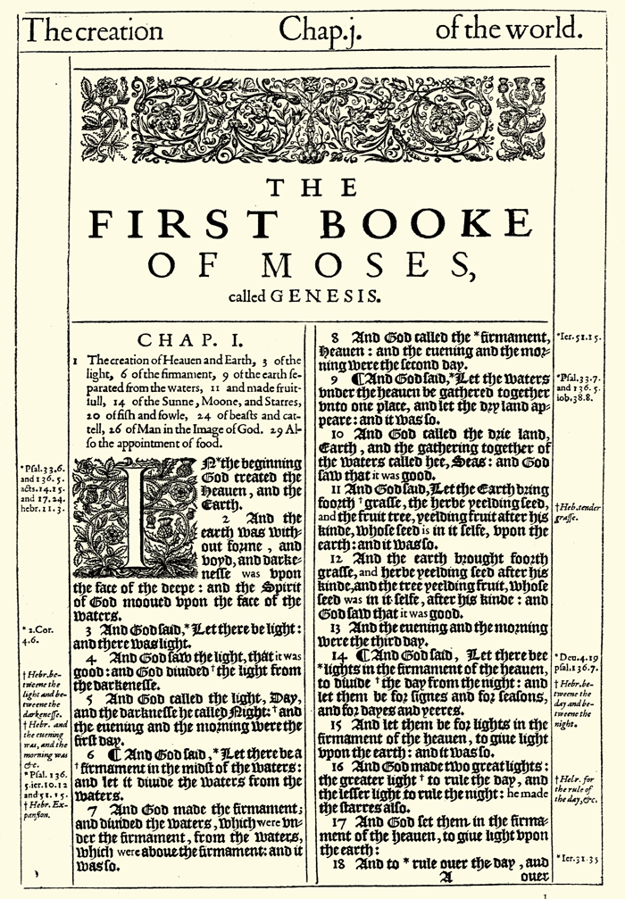

Well last week we finished doing an introduction to the subject of bible translations. And we've talked now about the 2 major approaches to bible translation. We talked about formal equivalence and dynamic equivalence, and I mentioned to you that there is no single English bible translation that uses only 1 of these approaches. All bible translations use both formal equivalence and dynamic equivalence to a certain degree. Some will lean more toward dynamic equivalence, some will lean more toward formal equivalence, but all of them use both of these approaches to some degree. And so we can think of this as a spectrum with 2 extremes, say 1 would be formal equivalence, 100 would be dynamic equivalence and all translations would fall somewhere between these 2 extremes. There is a lot of diversity among bible translations today, there's no 2 translations that take exactly the same approach to the balance between these 2 approaches. So I do think it's valuable to use multiple bible translations on a regular basis. There are good reasons to have different translations, different purposes for having them. So if you want to read quickly through the bible for example, you'll want to use a translation that leans more toward dynamic equivalence, because it's going to be a more readable bible translation. If you want to study the bible more deeply, then I would suggest using a bible translation that leans more toward formal equivalence, because its going to be more literal, its going to correspond more closely to the original languages of scripture, the original text. And when we get to the very end of our study, who knows how long that'll take, it could be awhile. I will recommend several bible translations for these different purposes. I'll say I like this one for this purpose, and this one for this purpose. And so once we get through them all, and I give you a survey of all the translations, I'll give you my conclusions about them. audio
Last week we also talked about some of the earliest bible translations that were done in other languages. Does anyone remember the name of the very first translation of the bible, and what language it was in? [student answered the Vulgate]. Vulgate was an early one, not the earliest. What was the earliest? [student's 2nd answer was Septuagint]. The Septuagint was the very first translation of the bible. And what language was that in? [student answered Greek]. That was in Greek. This translation was so early that it was actually completed before the new testament was written, it was done during the 2nd and 3rd centuries before Christ. And so it only covered the the old testament. Then after the new testament was written in Greek, then that new testament could be combined with the Septuagint to form a Greek bible. And the Greek bible was very popular for quite a few years. But then before too much time passed a new translation appeared that soon became the most dominant and popular translation of the bible, and that was the one that someone mentioned earlier - what was that one? [student answered Vulgate]. The Vulgate. And what language was the Vulgate written in? [student: Latin]. It was in Latin. This translation was finished in the year 405 after Christ. And this translation reigned supreme among bible translations for over a 1000 years. audio
But there were 2 events that took place that combined to bring an end to the dominance of this translation otherwise it might still be the most dominant translation today. But there were 2 important things that happened, that brought an end to the reign of this translation, as the supreme translation. Does anybody remember these 2 events? [student: printing press]. The printing press, that's right, that was invented in the 1400s. So a little over a 1000 years after the Vulgate was completed. And then there was a 2nd event that happened at about a generation later. What was that? [student: protestant reformation]. Yeah, the protestant reformation took place in the early 1500s. Men like Martin Luther and John Calvin during the protestant reformation were calling people to return back to the bible and turn their back on unbiblical traditions that have been passed down in the Catholic church. And so they basically taught that the bible is the final authority for all our beliefs and practices.
And so it's no surprise that the protestant reformation sparked an explosion of new bible translations that was facilitated by the printing press. The printing press made it possible to produce all these bible translations very quickly. And there were not just a new translations in English, many other languages got new translations as well. But of course English was one of those languages. Does anyone remember who the man was who first published the new testament in English? What was his name? [student: William]. William Tyndale, yes. He translated the new testament from Greek, so not from Latin the popular bible of the day, but from the original Greek and then he published that new testament in 1526. And that was just 9 years after Martin Luther nailed his 95 theses on the doors. So he worked pretty fast, this spark took place very quickly here and all of a sudden there's an explosion of new bible translations happening within the first 10 years. Unfortunately Tyndale did not get to the finish the whole bible, he did start working on the old testament. He finish the Pentateuch, he did a couple other books in the old testament, and then he was imprisoned. He continued to work on it in prison, but then he was put to death. And it came down to other men to be able to finish his work, to continue that work, and publish the whole bible. And there were several different full bibles that were published during the 1500s.
audio
But then in the year 1603 king James came to the throne in England. And he decided to authorize a new bible translation. And this translation was finished and published in 1611. And appropriately it was called the king James version, sometimes it's also called an authorized version, and that's just pointing us back to the fact that it was authorized by king James. A suggestion was made him - hey how about we do a bible translation and he jumped all over that idea, and said yes that's what I wanna do. And so he was very enthusiastic about this project, kind of wanted to put his stamp on it, so he would attend the different meetings and give input into that, and tell them what he wanted them to do. And so this was sort of his baby, this was his legacy, he's of course very well known for this today as the person who authorized this translation. audio
And it wasn't too much later, maybe like 40 or 50 years later, that the KJV became the most popular bible translation in English. The Geneva bible did remain popular for many years, I talked about the Geneva bible last week which was done in 1516 and it was very popular. And it was still the most popular bible for a while, but after about 40 or 50 years after the king James came out, it became the most popular bible translation. And by the 1700s, the early 1700s, the KJV was basically the only bible translation out there in English, it was the only one being used. And even today it continues to be used by many people. Now this doesn't mean that the king James used today is the same one that was published in 1611. If you ever have gotten a chance to look at a king James from 1611, one of the original king James bibles, you would struggle quite a bit to read it. Let me show you a picture from a 1611 king James bible. And I know its going to be hard to see this cause its pretty small there, but if you're sitting up close here, maybe you can give a shot at reading it. And what you'll see is that it's pretty tough to read. First of all we have a problem here of a Gothic font that they used instead of the more traditional Roman fonts. So that was how they published it at first. And I'm sure that people were probably used to reading in a font like that. But still for us today that's very difficult to read in this kind of fancy Gothic font. But then another thing that we see, and you can see it right at the very top, is they actually spelled quite a few words differently. So notice the word book there has the letter e on the end of it, and if you were to keep reading through Genesis 1 there, you would see that there are lots of words there that are spelled differently. audio
So between the Gothic font and the different spellings of words, you would really struggle to read an original 1611 version of the king James bible. And so most people who use the king James today, in fact I think its probably safe to say almost everyone who uses the KJV today is not using the 1611 edition because it would be very difficult to read that. No, what happened was over time the KJV was updated and revised, there were several different points when that happened. The final time that it happened was in 1769. And so most people who use the KJV today are using the 1769 revision of the 1611 KJV. And it is quite a bit different from the original 1611. Scholars have studied the differences and they've counted about 100,000 differences. So just counting up how many words there are, I think about 700,000 words in the KJV, and out of those 700,000 about one 100,000 of them are different. Whether it comes down to spelling changes or just a few tweaks, most of the changes have to do with spelling changes, but you know there are quite a few differences, about a 100,000 different places where there are differences, not just in spelling, but there are also changes in punctuation as well. audio
So this is the KJV that is in regular use today, the 1769 edition. But most of these changes are not really that significant. Yes, there are a lot of changes but most of the words are basically the same as before, just maybe with spelling differences and that sort of thing. It's very hard to find really significant changes going from 1611 to 1769. So it is an authentic KJV with just some, you know I think, legitimate important updates that needed to be made, that keep up with the changes in the English language. So the KJV people use it isn't significantly different from the original 1611 edition. It is good to be aware that when you read the KJV you're probably not reading the 1611 edition unless somehow you have access to one. They're very hard to find, they're in libraries usually or museums and they're under glass and they're protected and everything. I think the Master's seminary has an original 1611 KJV close by so you can go down there and look at one in person if you'd like to, but I'm sure they wouldn't let you touch it or open it, cause it's very fragile course, being so old. But just keep in mind, if you do use the KJV, you look for it online and you're using in on biblegateway, you're not looking at the 1611 edition, its the 1769 edition, this updated edition. audio
So what I want to do now is take a look at some of the most memorable verses in the 1769 edition of the KJV. The KJV has a very high literary quality to it. The people who translated it took great pains to put it in a very smooth English. And so it's very elegant and beautiful. And that's one of the reasons its remained popular for so long. There are many statements in the KJV that just have a wonderful cadence and rhythm to them. So let's take a look at some of these popular versus in the KJV that are so familiar to us, even if you've never read the KJV, you might've heard some of the statements that come from the KJV. Let's start with one from the book of Psalms, the preeminent book of poetry in the bible. audio
| Reference | Verse |
|---|---|
| Psalm 119:105 | Thy word is a lamp unto my feet, and a light unto my path. |
Here is Psalm 119:105 [verse read]. So that just has a really nice smooth sound to it. Obviously, there are some old English words there that we don't use much anymore, but that's a very clear translation in old English at least, they would've understood this very clearly. And I love this verse, I love the imagery here, the idea that God's word is like a lamp that gives light to us in the dark, that's a really great image, and something that we can all relate to right?
Because every day the sun comes up and then it goes down, so we have our day time and we have our night time. Now in our modern times its a little bit harder to understand darkness right? Okay so you go on a night and yes it is dark out, but there's still a lot lights there right? We have artificial light everywhere, we have our light switches in our house, we have our street lights out there on the roads and sidewalks. And so there's a lot of artificial light out, we don't really I think have a good understanding of what darkness really is. If you've ever gone into a cave as I did when I was a kid and then they just shut off the lights at a certain point, that's real darkness right there.
Or maybe you like to go out camping, when the weather's nice and you get out in the woods, and you're away from all this artificial light, and all you have is the moon and the stars out there giving you a little bit of light. And if its a new moon, then its just the stars, it's pretty dark and you wouldn't wanna be out there without a flashlight because you'd be stumbling around and trying to find the outhouse, you know, or get down to the water that you need, that sort of thing. It's very interesting to to experience a deeper form of darkness than what we have on a daily basis in our modern culture.
But hopefully you have been able to experience that at some point in your life, to see a little bit more what real darkness is like, because then I think you can more appreciate what this verse is saying. When you really have a need for a flashlight, know know when it's dark out, maybe when the powers out on your street and the street lights aren't working and you have no artificial light working in your house. Where's that flashlight, you're fumbling around for it - and you realize - man, I really need this thing or I'm not going to be able to see where I'm going, going to really struggle.
Well God's word is like that in our lives. It gives us light, it shows us the direction that we need to go in life. It gives us guidance for our lives. It shows us how to live in the way that pleases God.
So this is a wonderful verse in the KJV, it has a very memorable translation of it. I think this has even been set to song, and it's been sung in churches in the last couple of decades.
audio
| Reference | Verse |
|---|---|
| Is 40:31 | But they that wait upon the LORD shall renew their strength; they shall mount up with wings as eagles; they shall run, and not be weary; and they shall walk, and not faint. |
Let's look now at another memorable verse in the KJV, Isaiah 40:31 [verse read]. This is just a really powerful verse. Its been a comfort to so many Christians for so many years. When we're going through hard times we know that we can follow what this verse is teaching us - wait upon the LORD, trust in him, and he will give us the strength that we need to persevere through difficult times. audio
| Reference | Verse |
|---|---|
| Matt 6:33 | But seek ye first the kingdom of God, and his righteousness; and all these things shall be added unto you. |
Now let's look at another verse in the KJV, one that is well known, Matthew 6:33 [verse read]. This verse is also very powerful, it has a really great reminder that we need to keep God first in our lives. Seek ye first the kingdom of God, make God and his kingdom and his righteousness first in our lives. So our focus should be in in life on doing things that matter for eternity, things that the God wants us to be doing, storing up treasure in heaven instead of treasure on earth. That's what Jesus said just a little bit earlier in this chapter.
And so what this verse is talking about is - hey don't worry about the things of life. Yes there are things that we need like food and water and clothing and those sorts of things, but don't worry, God will provide those things - all these things shall be added unto you. No, that doesn't mean everything that you would ever want, but no, it just means that things that you need. The context there is talking about food and clothing. And when we're pursuing God and doing what pleases him, he will provide for our needs.
audio
| Reference | Verse |
|---|---|
| John 3:16 | For God so loved the world, that he gave his only begotten Son, that whosoever believeth in him should not perish, but have everlasting life. |
Now let's look at one more memorable verse in the KJV, and this is probably the most memorable verse in the entire bible. Does anyone know what verse I'm talking about? [student: John 3:16]. John 3:16. Many Christians have learned John 3:16 in the KJV. We might even be able to recite it together right [verse read]. I memorized this verse in the KJV way back when I was I think 5 years old, cause it was the key verse in AWANA for the Sparks group - kindergarten through 2nd grade. And I think it still is today. Many people aren't memorizing it in the KJV anymore, but that was how we learned it back when I was a kid. And this just has the great flow and a great ring to it, I think even today people can still understand this in the KJV. There's a couple of archaic terms in there, but nothing that is really severely archaic and very difficult to understand. So this is a great verse. If you only memorize 1 verse in the bible, this would be a great choice. It has a powerful statement about God's love for us - it touches on the very heart of the gospel, and how God sent Jesus to earth to die for us. It doesn't talk about all those details, but it just kind of summarizes God sent his son for us. And if we put our faith in him, if we trust in him to save us based on his work on the cross, then we will have everlasting life, we will live with Jesus forever instead of being punished for our sins.
So those are 4 I think of the most memorable verses in the KJV. We can add many more to this list, but these are 4 that I think are very powerful and that many Christians memorized, and that just have really smooth rhythm to them in the KJV.
audio
But the translators of the KJV were not starting from scratch as we talked about last week. They were building on the work of previous translators. And as I told you last week about 90% of the KJV in the new testament comes directly from Tyndale's new testament. And I want to show you some of the memorable statements in the KJV that come directly from Tyndale's new testament. audio
| Reference | Verse |
|---|---|
| Matthew 5:9 | Blessed are the peacemakers: for they shall be called the children of God. |
Take a look there at Matthew 5:9. This is in the KJV [verse read]. This whole verse is taken word-for-word from Tyndale's new testament - of course taking into account spelling changes and that sort of thing. And in fact there is a word in here that Tyndale actually came up with. Can you guess what word it is? The word did not exist before Tyndale's new testament. [student: peacemakers]. Peacemakers, that was a new word he came up with this word as he was looking at the original Greek text, trying to come up with a way to translate this. And he realized there is no good way to translate this - I need to make up a word. So he made up this word peacemaker here, and the KJV just borrowed from that, they just took it right from Tyndale's new testament - a little bit of plagiarism there. Tyndale should be recognized for this verse, it's word-for-word right from Tyndale's new testament. audio
| Reference | Verse |
|---|---|
| Matthew 7:7 | Ask, and it shall be given you; seek, and ye shall find; knock, and it shall be opened unto you: |
Now look at Matthew 7:7 a little bit later in the sermon on the mount. This also comes word-for-word from Tyndale's new testament [verse read]. I just love the rhythm here of this translation, it has a great flow to it. But this wasn't from the king James translators, they just stole this right from Tyndale's new testament word-for-word. audio
| Reference | Verse |
|---|---|
| Acts 17:28a | For in him we live, and move, and have our being; |
So let's look at the next one - Acts 17:28, the very beginning of the verse [verse read]. This is a statement that just has a really nice flow and ring to it, and its a phrase I think many Christians are familiar with, because its still preserved in many of our modern translations. But once again this comes almost exactly word-for-word from Tyndale's new testament. It's just that word and right before the word move that Tyndale didn't have. I compared it, and he didn't put the word and before the word move. He just had it before the word have. The king James translators added in there, but otherwise they're using exactly the same words that Tyndale used at the beginning of this verse. audio
| Reference | Verse |
|---|---|
| Romans 13:1 | Let every soul be subject unto the higher powers. For there is no power but of God: the powers that be are ordained of God. |
Let's look at one more verse where we see us strong influence from the Tyndale new testament here. Romans 13:1 [verse read]. This is not exactly word-for-word from Tyndale's new testament. The very first sentence there has quite a few modifications from Tyndale's new testament, but if we were to look at the 2nd sentence here, the 2nd half of this verse, it is word-for-word from Tyndale's new testament. And there's actually a phrase in there that had never been used before in English before Tyndale published his new testament. Its that phrase "the powers that be". You see that phrase there - the powers that be? That was coined by Tyndale, that had never been used before in English as far as we can tell. And that is a popular phrase that even today people are using. People will still say today - the powers that be, and they'll just be talking about those who are in government. That's a popular phrase because of William Tyndale and the king James translators were smart enough to say - hey, Tyndale did a good job here, let's just steal what he put in his new testament. audio
So William Tyndale's influence on the KJV was very significant. I talked about this briefly last week, but I want a circle back to this - show you some really good examples. Tyndale did such a good job in his translation that it had a huge impact on English bible translations for hundreds of years. But the KJV does not always agree with Tyndale's new testament. Sometimes there are changes, and occasionally those changes are good, but sometimes they are not so good. Let me show you a few places where the KJV probably should've stuck with Tyndale's new testament translation. audio
| Version | Reference | Verse |
|---|---|---|
| KJV | Matthew 26:27 | And he took the cup, and gave thanks, and gave it to them, saying, Drink ye all of it; |
| TYN | Matthew 26:27 | And he toke the cup and thanked and gave it them sayinge: drinke of it every one |
| CSB | Matthew 26:27 | Then he took a cup, and after giving thanks, he gave it to them and said, "Drink from it, all of you.["] |
We'll start with Matthew 26:27 - this is one example where Tyndale's new testament is superior I think to the KJV. So we'll start with the KJV here and then I'll compare it with Tyndale's new testament. Here's what the KJV says in Matthew 26:27 [verse read]. This verses is of course talking about the last supper that Jesus had with his disciples right before his death. There are 28 chapters in Matthew, chapter 28 has the resurrection, 27 has the crucifixion, 26 is talking about the events that led right up to the crucifixion. So Jesus had a final supper with his disciples, and he taught them to remember his imminent death by eating some bread and drinking some wine together. And so in this verse of course Jesus was talking about the wine that they drank. And notice what Jesus said to do with the wine according to the KJV. He told his disciples to drink all of it - to drink all of the wine. I once read a story about a small church where they would fill a picture of wine when they would celebrate the Lord's supper. And because the church was kind of small, there would usually be a lot of wine left over in that pitcher. And so the preacher, you know as he's taking care of putting things away at the end, and he was using this verse of course to celebrate the Lord's supper, he thought to himself - oh man, we better make sure that we drink all this wine. So he would actually drink the rest of the pitcher of wine and end up being drunk before too long. He felt he was between a rock and a hard place there, and that it was better just to go and drink the wine even if it meant getting drunk. And he was basing that decision on this verse in the KJV. But that is not what Jesus is actually saying here. The KJV does not have an accurate translation from the original Greek. Tyndale's new testament translation here is more accurate, and you'll have to weed through the different spelling changes, but you can see how some of these words are spelled differently back in the 1500s, and we can still make sense of it [verse read]. Notice that difference there at the end - it doesn't say drink all of it, it says drink of it every one. So in other words this isn't saying that the people are to drink all of the wine when they celebrate the Lord's supper, it just means that every believer in the church is to drink some of the wine. And in our church, we put it in little cups so that there's no danger of becoming drunk. Just take a little sip and of course its even grape juice in our church. But if it were wine, you wouldn't get drunk, it wouldn't be a problem, but we steer clear of wine cause some people, if you take a little wine, you want more, so we want to guard against that. So this is the more accurate way to interpret this verse and its followed in all the major bible translations of today. Here's the CSB as an example [verse read]. So a few changes there from Tyndale, but it basically means the same thing that Tyndale had. Most bible translations follow Tyndale here, and they're taking the right approach. audio
Yeah, question. Student - If you were to put a comma after the all, then it would work - drink ye all, of it. Right, we would need that punctuation there, but they didn't put that punctuation there, and so its very misleading there. If they intended to convey what Tyndale did, they didn't do a very good job. It would have been better to just keep what Tyndale had, that's what they did in many other places, they just copied Tyndale. Why they thought they needed to change in here, I do not understand, it doesn't make any sense. Unfortunately, it has misled many people throughout the years. So that's one verse where I think Tyndale's new testament is superior to the KJV. audio
| Version | Reference | Verse |
|---|---|---|
| KJV | 1 Corinthians 14:27 | If any man speak in an unknown tongue, let it be by two, or at the most by three, and that by course; and let one interpet. |
| TYN | 1 Corinthians 14:27 | If eny man speake wt tonges let it be two at once or at the most thre at once and that by course: and let another interprete it |
| CSB | 1 Corinthians 14:27 | If anyone speaks in a tongue, there are to be only two, or at the most three, each in turn, and let someone interpret. |
Let's look at in another place where Tyndale's new testament is superior to the KJV, 1 Corinthians 14:27. Here's what the KJV says [verse read]. Notice that there are a lot of words here in italics. And I'm not adding those italics myself, those come right from the KJV. What the KJV translators did, I don't know if this was back in the original 1611, or if they did it later in the 1769 edition, but there are words italics here. And the reason they put the italics here was to show us that there are places here where the translators have added words that aren't really taken from the original Greek. So these different words and phrases in italics, there's not a corresponding Greek word or phrase there. What they're doing is they're just adding these words for clarification, to try to make it look smoother or to kind of convey what they think is the right interpretation here. Most of the words here in italics are fine, but there is one word here that is I think a big problem. Can anyone guess what word that is? What word is the most significant here in italics? [student: unknown]. Unknown. This one I think is a problem. This word appears in italics right before the word tongue, not just in this verse, but 6 times total in this chapter. This is the only place where we see that phrase unknown tongue in the KJV. 6 times and they always put italics because there is no Greek word here for unknown. And the problem is that this word implies that the gift of tongues did not involve real languages. So it just sort of this unknown thing out there that nobody knows. Its just kind of gibberish you could say. But this creates a contradiction between this chapter and Acts 2. Acts 2 is where we see the gift of tongues in action for the very first time. In Acts 2 it's very clear that its a reference to real actual languages. And so the KJV doesn't add the word unknown in Acts 2 like they do here. But there is no basis for adding this word unknown here and trying to create a difference in interpretation between the 2 passages - there's no Greek word for unknown here. There's no implication from the text here in this passage, from the context, that we should be understanding this any differently then the tongues in Acts 2. Both of the passages are talking about real languages, and so I think it's inappropriate to add the word unknown here. This just adds confusion I think to the passage. Once again Tyndale's new testament is more accurate on this issue. Take a look at Tyndale's translation [verse read]. Notice the word unknown is not there. The KJV translators added that word, they thought they knew better than Tyndale, but they didn't. They should've followed Tyndale here. And I'll show you also the CSB. They also don't add to word unknown here either. In most, I don't think there is any other modern translations that have the word unknown, they just say - if anyone speaks in a tongue. That is the better approach here, than adding the word unknown. So that's another verse where I think Tyndale did a better job than the KJV. audio
| Version | Reference | Verse |
|---|---|---|
| KJV | 1 Timothy 2:12 | But I suffer not a woman to teach, nor to usurp authority over the man, but to be in silence. |
| TYN | 1 Timothy 2:12 | I suffre not a woman to teache nether to have auctoricie over a man: but foreto be in silence |
| CSB | 1 Timothy 2:12 | I do not allow a woman to teach or to have authority over a man; instead, she is to remain quiet. |
Let me show you another example here - 1 Timothy 2:12. The KJV says [verse read].
This verse teaches more clearly than any other verse in scripture that women are not to teach or to have authority over men in church. But notice that the KJV has the word usurp there. And this is a misleading translation because it leaves the door open for women to have authority in the church as long as they're not taking it by force. That's kind of what the word usurp implies, as long as you don't take it by force, then its fine to have authority. And so the idea is that if the leaders of the church grants that authority to women in the church, then they're not usurping it, and they're not in violation of this passage according to the KJV.
But Tyndale's new testament here is more faithful to the original Greek. Tyndale said [verse read]. So there is no word usurp here. He has the word have instead - to have authority - this does not leave any wiggle room for women to have a authority in the church. And this is the best way to interpret the original Greek. Tyndale was on the right track here.
And we see the same interpretation in many modern translations like the CSB [verse read]. That phrase have authority is the same thing that Tyndale has with the spelling changes taken into account there.
So I've shown you 3 places, and I could keep going of course, but I'll just give you a few examples here in these different categories. These are several examples, 3 different examples, where I think Tyndale's new testament was superior to the KJV.
audio
The KJV is not a perfect bible translation. There is no such thing and the KJV is not even an ideal translation for people to use today. And one of the reasons for that is that English language has changed a lot. Not even from 1611, its changed a ton from 1611, but if we just go back to 1769, the last time the KJV was revised, well the English language has changed a lot since that time as well. And so I want to show you some passages where the KJV has obsolete language. There is a lot of obsolete language in the KJV, where English has changed, and we have words that are just no longer in use anymore. They were used back in the 1600s and 1700s, but not anymore. audio
| Version | Reference | Verse |
|---|---|---|
| KJV | Proverbs 29:24 | Whoso is partner with a thief hateth his own soul: he heareth cursing, and bewrayeth it not. |
| CSB | Proverbs 29:24 | To be a thief's partner is to hate oneself; he hears the curse but will not testify. |
Take a look there at Proverbs 29:24 [KJV read]. When is the last time you used the word bewrayeth? I don't think I'd ever even heard of that word until I read it here in this passage. The word bewrayeth is just an old English word, and it means to reveal. It means to reveal. Here is this verse in the CSB [verse read]. So to testify is to reveal the evidence you could say. So that is a more of accurate translation in modern day English. The word bewrayeth just does not really help us to understand what's going on here. So this is very obsolete language. audio
| Version | Reference | Verse |
|---|---|---|
| KJV | Jeremiah 17:4 | And thou, even thyself, shalt discontinue from thine heritage that I gave thee; and I will cause thee to serve thine enemies in the land which thou knowest not: for ye have kindled a fire in mine anger, which shall burn forever. |
| CSB | Jeremiah 17:4 | You will, on your own, relinqish your inheritance that I gave you. I will make you serve your enemies in a land you do not know, for you have set my anger on fire; it will burn forever. |
Here's another place in the KJV where we have obsolete language - Jeremiah 17:4 [verse read]. It seems like almost every other word there is archaic and we don't use a lot of these words any more. Most these words that are obsolete are pronouns - thou, thyself, thine, thee, ye, even the pronoun mine there, we use mine but not in that same way, we would put the word my there not mine. So there are a lot of archaic pronouns in this verse and so it's much easier to read this in a modern English translation like the CSB [verse read]. So now we have a modern English pronouns in this verse and its much easier to read and understand what's going on there. All those old pronouns, we don't use those anymore, they were a part of old English, but they're all obsolete now. audio
| Version | Reference | Verse |
|---|---|---|
| KJV | Philippians 1:23-24 | For I am in a strait betwixt two, having a desire to depart, and to be with Christ; which is far better: Nevertheless to abide in the flesh is more needful for you. |
| CSB | Philippians 1:23-24 | I am torn between the two. I long to depart and be with Christ--which is far better--but to remain in the flesh is more necessary for your sake. |
Let me show you one other verse in the KJV that has obsolete language - Philippians 1:23-24. Here's the KJV [verse read]. That word strait there used to refer to it a narrow space, and we still do use it to refer to a specific type of narrow space, to a channel of water, but it was used more broadly back in the old days. That word betwixt, we don't use that anymore, that's just an old English word that means between. So here is a more modern way of saying this, the CSB just says [verse read]. The KJV is kind of tricky to understand. You can probably figure it out, especially if you look up some of these words in an old dictionary, but why should have to pause and look at words in a dictionary to understand. Let's just use modern English instead. So this is another passage that has archaic old obsolete English in it. And I can give you, of course, dozens and dozens of more examples, but those are 3 that really stuck out to me. audio
| Version | Reference | Verse |
|---|---|---|
| KJV | Deuteronomy 7:21 | Thou shalt not be affrighted at them: for the LORD thy God is among you, a mighty God and terrible. |
| CSB | Deuteronomy 7:21 | Don't be terrified of them, for the LORD your God, a great and awesome God, is among you. |
Now I want to show you some verses the KJV that aren't obsolete, the language is not obsolete, but it is misleading now because words change meaning over time. So let me show you a few places where we have this. This is actually a more serious problem because now you don't even know that you're wrongly understanding a verse, because the words there, we still use them, but they just have different meanings now. So here is a good example from Deuteronomy 7:21 - hopefully all of you would be able to catch this one [KJV verse read]. Now the word terrible in modern English means extremely bad. And I think we all know that that is not what it means here right. The scripture does not say that God is an extremely bad God. No this is an example of a word that used to have a different meaning to it and it's kind of changed over time in its meaning. We still use it, but not with the same meaning. Back in the old days it basically meant awesome and that is the word that we find in many modern English translations like the CSB. It says [part of verse read]. That's just the modern English way of handling the original Hebrew here. The word terrible is now misleading and it will cause people to reach the wrong conclusions if they don't know much about God, if they haven't read scripture and come to see God as holy in sinless, right? Then they might draw these wrong conclusions here. audio
| Version | Reference | Verse |
|---|---|---|
| KJV | James 2:3 | And ye have respect to him that weareth the gay clothing, and say unto him, Sit thou here in a good place; and say to the poor, Stand thou there, or sit here under my footstool: |
| CSB | James 2:3 | If you look with favor on the one wearing the fine clothes and say, 'Sit here in a good place,' and yet you say to the poor person, 'Stand over there,' or 'Sit here on the floor by my footstool'. |
Let me show you another example of this - James 2:3 - you're gonna catch this one as well [KJV verse read]. Now in the KJV this makes it sound like the people were showing favoritism toward homosexuals, people who were dressing as homosexuals. That is not at all what this passage is saying. And that's because the word gay as most of you know, especially if you've been alive for a while, this word has changed meaning very recently, in the last generation or 2. This word basically just used to mean happy, or bright, or cheerful. Now of course, people don't use it that way anymore, they're afraid to use it in that way for fear of being misunderstood. The word has been hijacked. Here is the CSB translation of this verse [verse read]. That's a better way now to translate into modern English, cause the word gay would be miss-leading - this is just talking about showing favoritism toward those who are wealthy and have the money to buy really nice expensive clothes. We should not be doing that - we shouldn't be showing favoritism toward people based on how wealthy they are, whether they're rich or poor. So this is another place where the KJV has misleading language. This isn't obsolete language, the word gay is still in use, but has a totally different meaning now then it used to have back in the old days. audio
| Version | Reference | Verse |
|---|---|---|
| KJV | 1 Peter 1:15 | But as he which hath called you is holy, so be ye holy in all manner of conversation; |
| CSB | 1 Peter 1:15 | But as the one who called you is holy, you also are to be holy in all your conduct; |
Let me show you one more passage with obsolete language in the KJV. Look at 1 Peter 1:15 [KJV verse read]. Now in the KJV, it sounds like Peter is commanding us here to be holy in our speech. That's how we use the word conversation today. But that is not what the word meant a couple 100 years ago, it was used to refer more generally to conduct or behavior. Look at this verse in the CSB [verse read]. So this verse is talking about much more than just our speech. I think this includes our speech certainly, but this is talking about the need for us to be separate from sin in every area of our lives, not just in our conversation. The KJV is misleading here because this word conversation has changed in its meaning or time. It is now more narrow. It had a broader meaning back then, now it has a more narrow meaning. And so it can mislead into taking a more narrow interpretation here than what the original Greek is conveying to us. So those are 3 passages that have miss-leading language, to go with those 3 earlier passages that have obsolete language. And I could give you many more examples of this as well. But those I think are 3 very clear examples. audio
But there are also verses in the KJV that have just clear misinterpretations. Over the years, bible scholars have become much more skilled in handling the original languages of scripture. And as a result, they've improved in their understanding of scripture, and bible translations can benefit from the advanced studies that bible scholars have been doing for the last few hundred years, building on each other's shoulders, and just improving in their interpretations of scripture. So I want to show you a couple places where the KJV has a misinterpretation of scripture. Maybe at the time they couldn't have really known better back then, but now with further study over these many years, we can come to an improved understanding of these passages. audio
| Version | Reference | Verse |
|---|---|---|
| KJV | Proverbs 3:5-6 | Trust in the LORD with all thine heart; and lean not unto thine own understanding. In all thy ways acknowledge him, and he shall direct thy paths. |
| CSB | Proverbs 3:5-6 | Trust in the LORD with all your heart, and do not rely on your own understanding; in all your ways know him, and he will make your paths straight. |
Let's start with Proverbs 3:5-6. These are very well known verses. I memorized these out of the KJV. Look at what they say here in the KJV [verse read]. This is a favorite passage for many Christians right? It tells us that we need to be trusting in the LORD and not just sometimes, not just with part of who we are, but with every aspect of our beings. We shouldn't be depending on our own understanding, but just depending on the LORD and on his word. And the promise here is that if we will do that, if we will trust in the LORD, if we will acknowledge him in all our ways, then we are told in the KJV that he will direct our paths, or in archaic English, he shall direct thy paths. And so it sounds here like God will guide us in the direction that he wants to go if we will trust in him and acknowledge him in our lives. And many Christians have jumped on this and thought that this applies to major decisions in our lives, like who should we marry specifically. And where does God want us to live. Well, if we'll just trust in him than he will show us the direction that we need to go. But this view is based on a misinterpretation of this passage. And most modern bible translations have been improved understanding of this passage. Take a look at the CSB here as an example - I could show you other translations, but look at the CSB here [verse read]. in Proverbs, the image of the straight path is pointing us to a righteous life that pleases God. And its compared with the crooked path - the crooked path is the person who is acting wickedly - he's going astray from that straight and narrow path of righteousness. So this passage is not talking about decisions where God's word has given us freedom, like who we need to marry. If you were with us for 1 Corinthians a few weeks ago, you know that 1 Corinthians 7:39 tells us that a window can get married to anyone she wants only in the Lord. In other words, marrying an eligible single christian man. And there's freedom there, you don't have to wait for God to try to show you exactly who to marry, you are free to marry anyone you wish. And I think that passage has implications not just for windows, but for widowers and for all other single people, especially single people who've never been married before. They're free to stay single, they're free to get married. If they get married, they're free to marry anyone they want, as long as that person is an eligible single person of the opposite gender who is a Christian, that is what matters. So we shouldn't be expecting God to show us, to direct our paths, and show us exactly what he wants us to do in these different areas that are not commanded in scripture. That would take away our freedom that God has given to us. No, the CSB has the better interpretation here. This is a much more literal translation and it's the best way to understand this text. It's just saying that when we're trusting in the Lord and growing in our knowledge of him, the word know there is a better translation than acknowledge, if we're seeking God, to know him better, then he will enable us to walk righteously and live in a way that pleases him. And he does that of course through his Holy Spirit who lives in us. audio
| Version | Reference | Verse |
|---|---|---|
| KJV | Isaiah 14:12 | How art thou fallen from heaven, O Lucifer, son of the morning! how art thou cut down to the ground, which didst weaken the nations! |
| CSB | Isaiah 14:12 | Shining morning star, how you have fallen from the heavens! You destroyer of nations, you have been cut down to the ground. |
Let's look at another passage in the KJV that has a misinterpretation. Look at Isaiah 14:12 [verse read].
So in this chapter, Isaiah was giving a message of judgment against the king of Babylon. But then here out of nowhere it seems in verse 12, we have this name Lucifer in the KJV. And most people have understood the word Lucifer to be a reference to Satan. Its a name of Satan and it's not a reference to the king of Babylon. But
this is not the right interpretation here, the word Lucifer is just a transliteration which is a letter-for-letter equivalent from the word used in the Latin Vulgate here. The KJV translators were relying on the Latin Vulgate here, there's a word in Latin that sounds just like Lucifer. I forget exactly how its pronounced, but its very similar. And so they're just taking that letter-for-letter from the Latin and putting it into English and treating it like a name. But in Latin that word Lucifer just refers to a shining star. And that's actually a very good translation from the original Hebrew. The Latin Vulgate here does a good job of translating from Hebrew. Its just that people later misinterpret this and understood it to be name instead of just a generic reference to a shining star.
Look at the CSB for this verse [verse read]. So the word Lucifer isn't here, this is a more literal translation from the original Hebrew. So this verse is not referring to Satan here. There is no evidence in the immediate context here in chapter 14 that there's any focus here on anyone besides the king of Babylon. This as a reference to the king of Babylon. Now sure, some of the statements that are made here in this verse and in later verses do seem a little bit extreme - fallen from the heavens. Wouldn't that better refer to Satan? Well we need to keep in mind that ancient kings thought of themselves as gods. King Herod certainly thought of himself as a god and when he accepted worship as a god, God struck him down and put him to death in Acts 12 or 11, somewhere in there. And in ancient times the same thing was true. The king of Babylon, he was the preeminent king in the world, he had this huge empire, he would have though of himself as a god. And so I think when Isaiah wrote his words of judgment here, God chose to give him words that would kind of meet the king on his level, where he thought he was basically. Oh, you wanna think of yourself as a king [god] then I'll proclaim judgment on you as though your pretending to be a god and not just simply a regular human king.
So this is not a reference to Satan, this is just a clever way of referring to the king of Babylon here according to the context. And most modern bible translations I think fit with that view very well like the CSB.
audio
| Version | Reference | Verse |
|---|---|---|
| KJV | Romans 8:16 | The Spirit itself beareth witness with our spirit, that we are the children of God: |
| CSB | Romans 8:16 | The Spirit himself testifies together with our spirit that we are God's children, |
Let's look at another verse in the KJV that has a misinterpretation - Romans 8:16. In the KJV this verse says [verse read]. Notice that there is emphasis here on the Holy Spirit through the presence of this pronoun right after the word Spirit. But what is the gender of this pronoun in the KJV? Is it masculine, feminine, or neuter? Do you know your English pronouns? Spirit itself - what is that? That is neuter, that's a neuter pronoun. So this verse in the KJV seems to be teaching us that the Holy Spirit is not a person, its just a thing, its just a force. This is a misunderstanding of what's going on in the original Greek here. Yes, the pronoun is neuter in Greek, but the reason it's neuter is because the Greek word for Spirit is also neuter. And in Greek, pronouns must agree with their antecedents in gender. And this is just simply grammatical gender, its not saying anything about the person-hood of the Spirit. The rest of scripture is clear that the Holy Spirit is the 3rd person of the trinity and has a mind, has emotions, has a will. We can support that with many different passages that we don't have time to look at. Take my systematic theology classes in the Bible Institute if you wanna study more about these sorts of things. So in English when we bring the pronoun into English we need to convert it to a masculine because we don't have really grammatical gender in English. We have personal gender in English. And since the Spirit as a person, we know that from scripture, we need to use a masculine pronoun - the Spirit himself testifies together with our spirit that we are God's children. That's what the CSB says, and all the other bible translations that I looked at, have the same pronoun there - the word himself or something very similar to it there. They're emphasizing here that the Spirit is not just a thing, a force, something that's impersonal, but is actually a person. So this is a severe miss-interpretation of the original Greek here by the KJV translators. audio
| Version | Reference | Verse |
|---|---|---|
| KJV | Titus 2:13 | Looking for that blessed hope, and the glorious appearing of the great God and our Saviour Jesus Christ; |
| CSB | Titus 2:13 | while we wait for the blessed hope, the appearing of the glory of our great God and Savior, Jesus Christ. |
Here's another verse where I think the KJV has it wrong - Titus 2:13 [verse read]. Notice that the KJV here refers to 2 different individuals, God and Jesus - the great God and our Savior Jesus Christ - 2 different individuals here. But this interpretation is based on a misunderstanding of Greek grammar. I won't get into all the details, we don't have time for that, and it gets pretty technical, but if you want to learn more about the rules of Greek grammar, take my Greek courses in the Bible Institute and eventually we will get to this. So if you're in my Greek class, down the road, we will eventually come along to this rule, its a more advanced rule in Greek grammar. But basically what this rule teaches us is that God and Savior are referring to the same person here. Look at the CSB [verse read]. So this is different, a subtle change, but it's clear that the CSB is seeing the words God and Savior as both pointing to Jesus Christ. And most of the modern bible translations follow this interpretation because it's based on a better understanding of Greek grammar. This verse has one of the strongest proofs for the deity of Jesus in scripture, but if you're using the KJV you will not be able to defend the deity of Christ in this verse, using this verse. You'd go to other places and you could find it there, but not here. audio
| Version | Reference | Verse |
|---|---|---|
| KJV | James 3:1-2a | My brethren, be not many masters, knowing that we shall receive the greater condemnation. For in many things we offend all. |
| CSB | James 3:1-2a | Not many should become teachers, my brothers, because you know that we will receive a stricter judgment. For we all stumble in many ways. |
Let's look at one more passage and then we'll be finished here. Look at James 3:1-2a [KJV verse read]. This passage actually has 3 different misinterpretations in just a verse and a half here. The first one, let's put up the CSB so we can compare. The CSB says [verse read]. So let's just walk through these differences, the major differences 1 by 1. Notice first of all that the KJV has the word masters, the CSB has the word teachers. The Greek word here just means teachers. So that's a miss-translation in the KJV, it's not talking about masters of slaves, but it's talking about people who teach God's word. The 2nd problem here is that the king James refers to the greater condemnation. The CSB has a better approach here. It just says a stricter judgment. The word condemnation I think implies the idea of eternal punishment, that we're going to be punished for our sins. That's not what James is saying. The idea of a stricter judgment I think fits well with what scripture teaches elsewhere. It talks about how we're going to stand before the judgment seat of Christ, and we'll be receiving our rewards at that point in time. So the idea is we're not going to be rewarded if we are bad teachers basically. If you try to become a teacher, and God hasn't gifted you for that, and you're doing a bad job teaching, well no rewards for you. And you're going to receive a strict judgment there. It doesn't mean you're going to be punished for your sins though. The KJV has that implication. Finally at the end here in the beginning of verse 2 we have this phrase in the KJV - in many things we offend all. So it seems to be saying that as Christians we just offend everybody around us, right? That is not though what the Greek text is saying. The CSB is more accurate here, it just said - we all stumble in many ways. So it's not talking about how we offend other people, its just talking about all we all stumble into sin. No Christian is immune from this, even though we're saved we still sin. And James even says we sin in many ways. The context there is of course focused on our speech, cause James goes on to talk about the tongue here. And that's of course confirmation that we're talking about teachers here, not masters, but teachers. People who speak and teach the word of God. So there are 3 different misinterpretations right here in this little short passage in the KJV. And modern translations like the CSB correct those and give us a better understanding. So the KJV has a lot of warts, and we're actually not even done looking and those warts. Next week we will pick up with the KJV and look at one more set of warts in the KJV and then we'll be done bashing on the KJV. But it's important to be aware of some of the problems in the KJV. Some of those things weren't problems originally but they become problems over time. But some of the things were problems from the beginning, and it was just that the translators were very limited in their understanding, and now we just know better. And so it's better to use up to date translations. I don't recommend the KJV to anybody for multiple reasons - old English and then a lot of bad interpretations. But we can still be thankful that God has used the KJV for the last 400 years despite all these imperfections. God has used it to bring many people to Christ and to help them to grow in their faith. Even people today who still use the KJV - God can use it in their lives despite all its imperfections. audio
Let's close in prayer. Thank you Lord so much for your word. Thank you for all the different bible translations we have. Thank you for the KJV despite its various imperfections. We know that there is no perfect bible translation, and yet you use these bible translations despite their flaws, despite their inadequacies, because even though there are some mistakes and some errors in them, they're still just packed full of so many important truths. And so we can learn about you and we can learn about your plan for our lives and what you expect from us. So thank you for the way you've used the KJV throughout the years. Thank you for the way you've used it in my life as I was a child learning scripture for the first time. It had a profound impact on my life and I know it's had that impact on many other Christians as well. So we thank you so much for your word Lord. Help us to be motivated to keep growing in our understanding of your word this week. In Jesus' name. Amen. audio